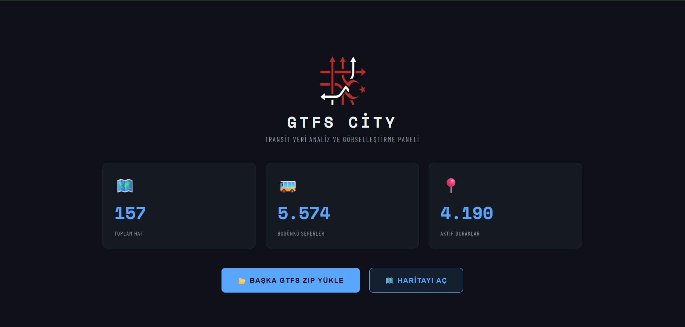
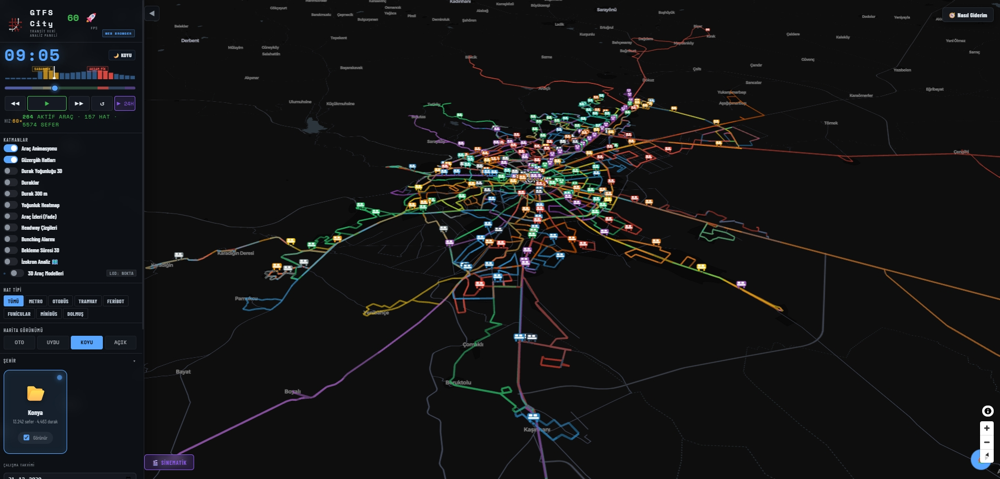
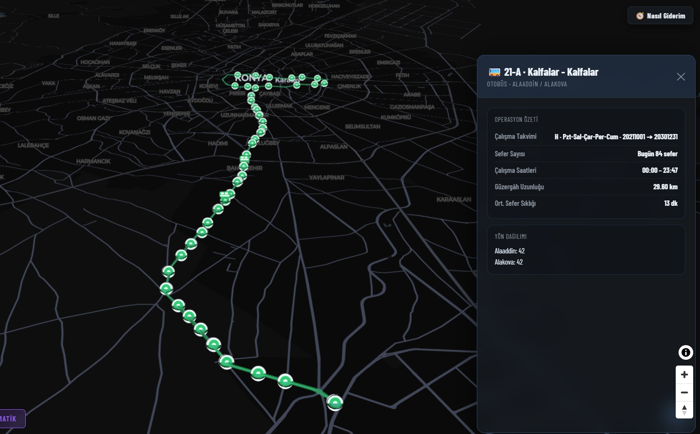
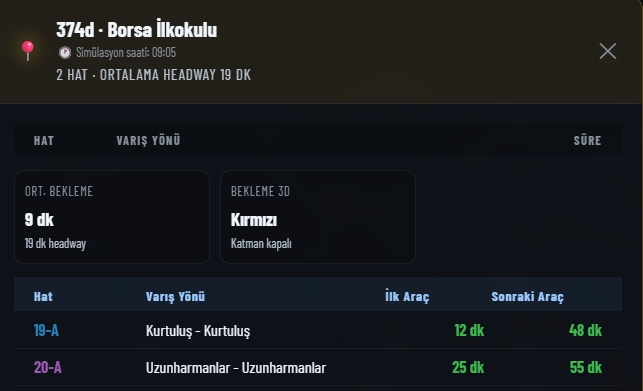
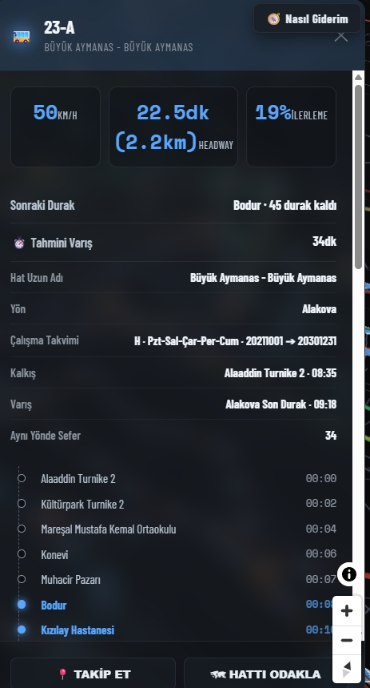
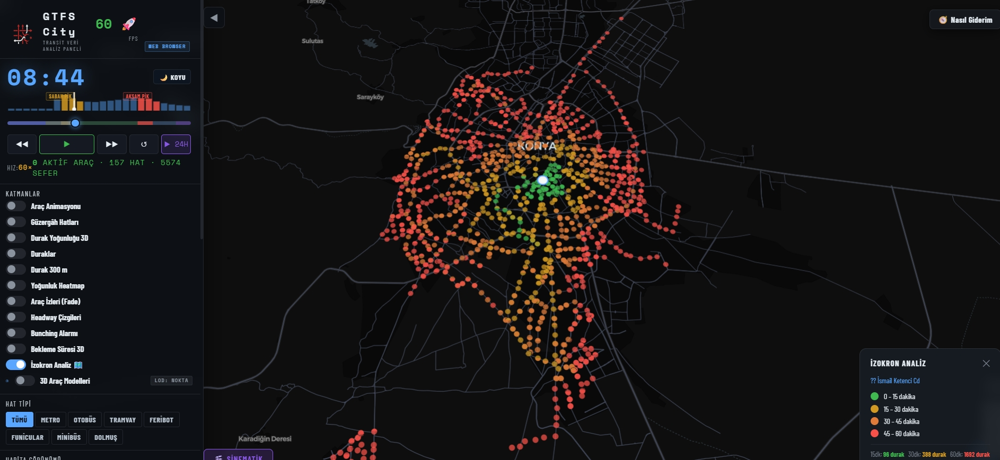

Tek Veri Seti
Ayn? anda tek aktif GTFS veri seti tutulur. Bu yakla??m veri ba?lam?n? sade tutar ve ?ehir kar??mas?n? ?nler.
GTFS Analiz ve G?rselle?tirme
GTFS ZIP verisini y?kleyip hatlar?, duraklar?, ara? ak???n? ve analiz katmanlar?n? tek uygulama i?inde inceleyin. Desktop s?r?m tam ak??? sunar; web demo taray?c? i?inde temel deneyimi g?sterir.
Ayn? anda tek aktif GTFS veri seti tutulur. Bu yakla??m veri ba?lam?n? sade tutar ve ?ehir kar??mas?n? ?nler.
Headway, bekleme, yo?unluk, kapsama ve izokron katmanlar? aktif filtrelerle birlikte ?al???r.
Desktop s?r?m yerel dosya ve HTTPS ZIP linki destekler. Web demo ise taray?c? i?inde do?rudan ZIP y?kleme ile ?al???r.
Ne Ba?ar?r?
Neden Farkl??
?r?n G?rselleri
Giri? Ekran?
Uygulama veri gelmeden haritaya ge?mez. ZIP y?kleme ve masa?st?nde HTTPS linkten indirme ayn? veri hatt?na ba?lan?r.


Veri seti do?rulan?r, haz?rlan?r ve ?al??ma ekran?na tek aktif kaynak olarak ba?lan?r.

Y?n bilgisi, servis takvimi ve g?zerg?h ?zeti tek panel i?inde toplan?r.

?lk gelen ve sonraki ara? s?releri tablo yap?s?nda izlenir. Durak paneli, hat bazl? geli? bilgisini daha okunur hale getirir.

Se?ilen ara? i?in hat, y?n, ilerleme ve durak ili?kisi tek panelde izlenir.

Se?ilen duraktan eri?ilebilir alanlar s?re temelli renklendirilir. ?zokron, bekleme ve di?er katmanlarla birlikte yorumlan?r.
Web ve Desktop Ayr?m?
Dok?manlar